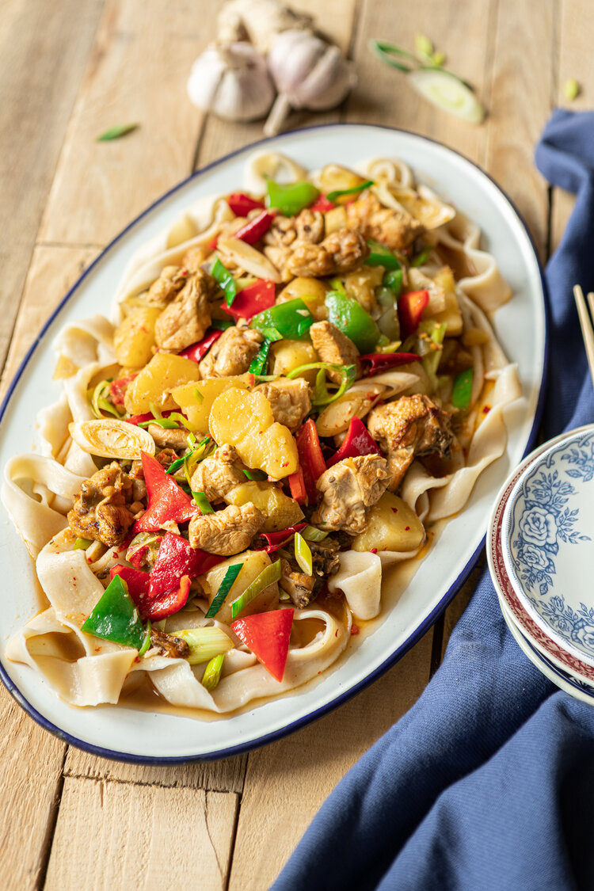

Big Plate Chicken

Description
Big Plate Chicken (Da pan ji) is one of the most famous Uyghur
dishes. It uses all chicken parts, potatoes, fresh peppers,
seasoned with dry chili peppers, and served on hand made flat
noodle.
Ingredients
- Half a chicken
- Oil 275ml
- Scallions 2x, diagonally cut them roughly into smaller pieces
- Ginger 42gr, remove the skin, slice them into thin, big pieces
- Two bulbs of garlic, chopped finely
- Star anise 3x
- Red Sichuan pepper powder 4gr
- Red chili flakes 1/2 tsp
- Sweet paprika powder 1/2 tsp
- Red chili pepper 1x , diagonally cut them roughly into smaller
pieces
- Mild green pepper 2x, 73gr,remove the seeds, slice lengthwise
in 4-6 pieces, then cut them into triangle forms
- Mild/sweet red paprika 1/2, remove the seeds, slice lengthwise
in 4-6 pieces, then cut them into triangle forms
- Potato 357gr, peel off the skin, cut it into thick bite-sized pieces
- Soy sauce 1.5 tbsp
- Sugar 2tsp
- Salt 2tsp
- Water 400ml
- All-purpose flour 200gr
- Water 80ml
- 2 pinches of salt
Steps
- To make the dough: Add flour and salt to a mixing bowl, then
add the water NOT at once but little by little to the flour,
and whisk to combine. Knead it until it becomes smooth from
inside out. Cover with a plastic wrap and set it in room
temperature for 15 min.
- In the meanwhile, remove the chicken’s neck, chop the chicken
into small bite-sized pieces (with bone), without chicken's
head and feet and the skin still intact. Wash them to remove
the blood and bone fragments. Add them to boiling water for
2-3 minutes, strain out all excess water.
- Prep the rest of the ingredients and display them on a plate,
so it's easier while you put them in the pan.
- To fry and braise: Warm up the pan (make sure the pan is dry),
add the oil, heat it up over medium-high. Add sugar, whisk
it, until the sugar is melted in the oil (you’ll see some
bubbles in the melted sugar in the oil). Add the chicken,
brown them.
- Add hot red chilies, the hard/white section of the scallion
(keep the green pieces for at the end), ginger and potato.
Mix. Add the water. Add star anise, paprika powder, chili
flakes, soy sauce, salt and the Sichuan pepper powder. Mix.
Bring it to boil, turn the fire down to medium-low heat to a
simmer and let it braise for 15 min.
- Prepare boiling water (2L) for the noodle in a separate
(sauce)pan.
- To make the noodle: cover lightly your palms, the working
surface and the rested dough with a layer of oil. Use a
rolling pin and roll out the dough in a rectangle form,
(the dough should be slightly oily) turn it around and
continue with the other side, put oil on it, if it feels
dry. Roll it out until you reach the thickness of 2-3mm, make
the surface even and smooth. Cut it into 3cm wide, long strips.
If you want it to be thinner, you can bounce the fingerprint
noodle at the table by holding the ends between your hands
while you stretch them. Repeat this with the rest of the
strips.
- To boil: Put the noodle into the boiling water, move the
noodles around immediately so they won't stick to each other.
Cook 2 to 3 minutes. Take the noodles out with a strainer,
shortly wash it in cold water, so they stop cooking. Strain
out all excess water.
- To serve: hot served on a big shared plate, 3-4 people per
plate, the stew is plated on top of the noodles, so the noodle
soak up all the aromatic sauce. Enjoy!!